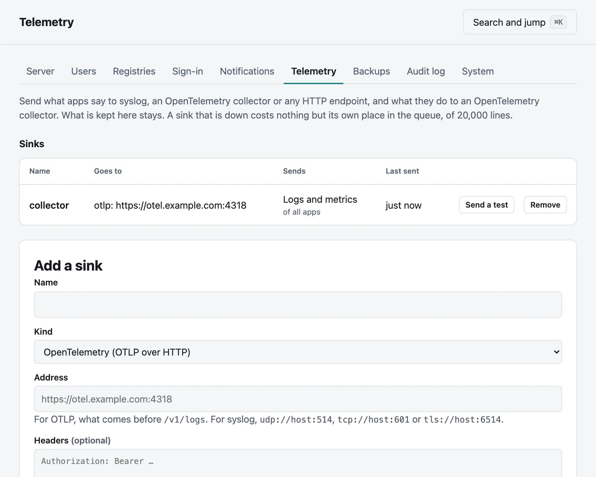
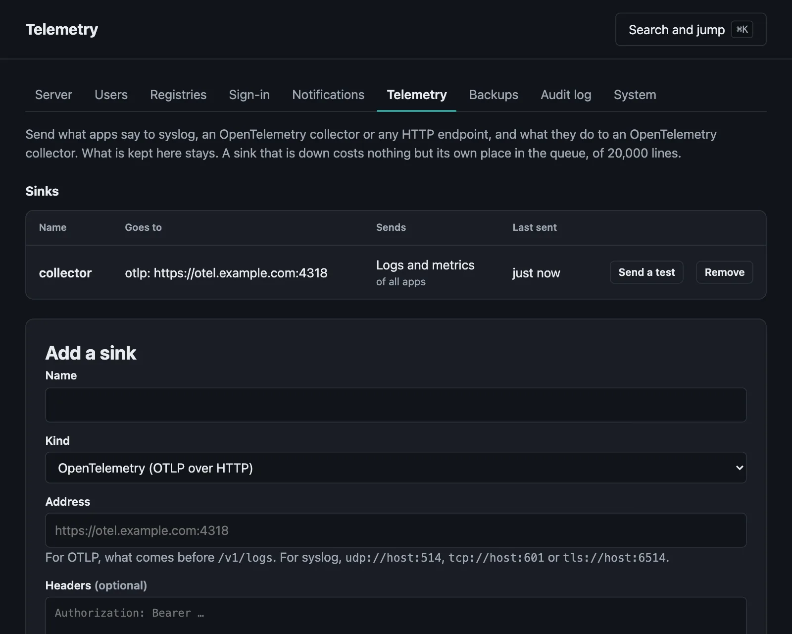

Sending telemetry elsewhere
Logs to syslog, OTLP or HTTP, metrics over OTLP, and thresholds.
On this page
What this has been tried against. CI sends logs and metrics to a real OpenTelemetry collector, and logs to syslog-ng over UDP, TCP and TLS, on each change to this code. It has not met a hosted service. If yours disagrees, please say how it goes.
Moorage keeps what apps say, in its logs, and what they do, in its metrics. It can send them somewhere else as well, if that is where your team looks, and tell you when an environment crosses a threshold.
Sinks#
A sink is somewhere to send things, and it takes an administrator to add one. In the console, it is Settings, then Telemetry. From the command line:


moor server telemetry add central --kind syslog --address tls://logs.example.com:6514moor server telemetry add collector --kind otlp --address https://otel.example.com:4318 --logs --metrics --header "Authorization: Bearer abc"moor server telemetry add archive --kind http --address https://logs.example.com/in --app shopmoor server telemetry test centralmoor server telemetrymoor server telemetry rm central| Kind | Address | Sends |
|---|---|---|
syslog | udp://host:514, tcp://host:601 or tls://host:6514 | Logs, as RFC 5424 |
otlp | What comes before /v1/logs, as in https://otel.example.com:4318 | Logs and metrics, as OTLP over HTTP, in JSON |
http | Where to send it | Logs, as JSON batches |
A sink sends all apps unless --app says which. Saving one with the same name changes it. It starts from about now: what was said before is not sent.
Headers are kept sealed, and are not shown again. Saving a sink without them keeps those it has, unless its address has changed. They are not sent in the clear across the internet, so they take an https address, or one on the local network. A sink is held to what notifications may reach, and goes by [notifications] allow.
What goes where#
What is sent is what is in the logs: what each instance says, and what each one-off command and cron job says, with secrets already taken out. What is said at a terminal is not kept, so it is not sent. Build logs and Moorage's own stay here.
Syslog has a facility of local0, a severity of informational for standard output and error for standard error, the server's name as its host, the app's as its app name, the instance as its process ID, and the environment as its message ID. Over TCP and TLS each message has its length in front of it, as RFC 6587 has it. Over UDP, anything past 1,400 bytes is cut off.
OTLP has a resource for each instance, with service.name as the app, deployment.environment.name, service.instance.id, moorage.process and host.name, and each record has log.iostream, of stdout, stderr or moorage. Moorage does not guess at a severity from what a line says.
HTTP posts this, with up to 500 lines:
{
"server": "moorage-1",
"lines": [
{"time": "2026-11-04T12:30:15.123Z", "app": "shop", "env": "production", "process": "web", "instance": "ins_01J8Z3", "stream": "O", "text": "Listening on 8080"}
]
}stream is O for standard output, E for standard error, and M for a note from Moorage, such as that an instance restarted.
Metrics go once a minute to an OTLP sink, with the same in them as /metrics has for a scrape, under names such as moorage.http.requests, moorage.http.request.duration, moorage.instance.cpu and moorage.host.disk.used. Counts are cumulative, from when the server started. --app has no effect on them.
When a sink is down#
Nothing here waits for a sink. Each has a queue of 20,000 lines, and past that the oldest go, with a count of how many did. It tries again after a second, then two, and so on, to once a minute, and when it gets through it catches up. A sink that answers that it will not take what it was sent (400, 413 or 422) gets less at a time, and a single line that it will not take is let go of and counted, so that it does not stop what comes after. How that is going is in the console and in moor server telemetry.
Apps go on through a restart of the server, and it catches up then too, from what is in the log files. What was in a queue as the server stopped is lost, so it is at most a few seconds' worth when all is well. This is for following what is going on. It is not a guarantee that each line gets there, and the record is the logs here.
Thresholds#
A threshold says when to be told about how an environment is doing. On an app's Metrics tab, or:
moor alerts add error-rate 5 --for 5mmoor alerts add latency-p95 800 --for 10m --env stagingmoor alerts add memory 90moor alertsmoor alerts rm thr_01J8Z3| Metric | What it compares | In |
|---|---|---|
error-rate | Answers that are 5xx, over the last minute | Percent |
latency-p95 | How long the slowest 5 requests in 100 took at least, over the last minute | Milliseconds |
memory | The instance using the most, against its [resources] limit | Percent of the limit |
cpu | The instance using the most | Percent of one core |
Past one for as long as it says, the default being five minutes, a notification goes to whoever a rule sends A threshold is crossed to, and another goes when it comes right. A minute that has nothing to say counts for neither: an app no one is asking has no error rate, fewer than 5 requests is too few to call one, and memory has nothing to compare if there is no limit.
It takes a maintainer of the app's project to add or remove one, and they belong to an environment. New rules ask for A threshold is crossed unless told otherwise, and rules from before do not, so that they go on doing what they did.
The server's disk#
The server tells of its data volume at 90% full. To have it say sooner, or later, set this in server.toml and restart the server:
[notifications]
disk_percent = 80